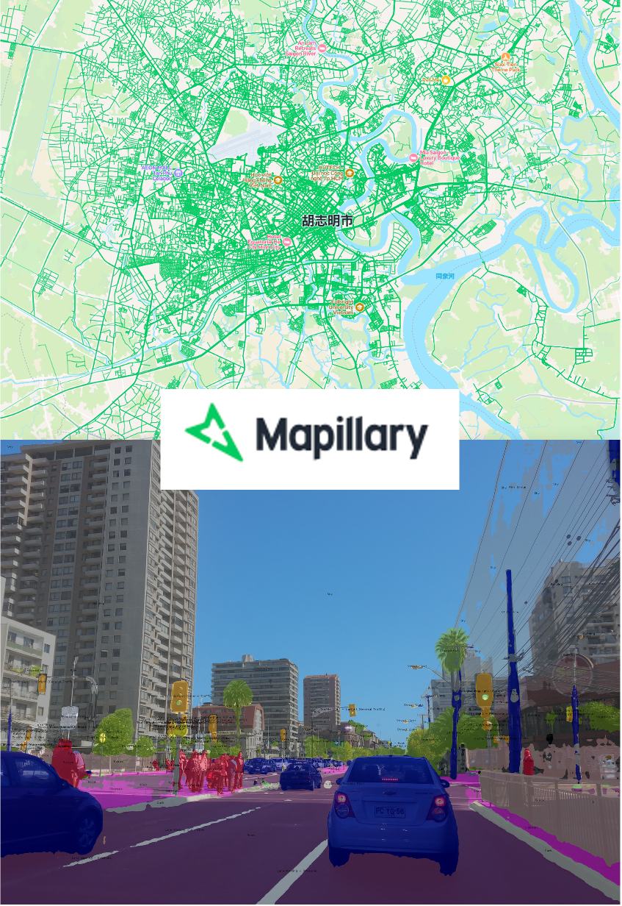
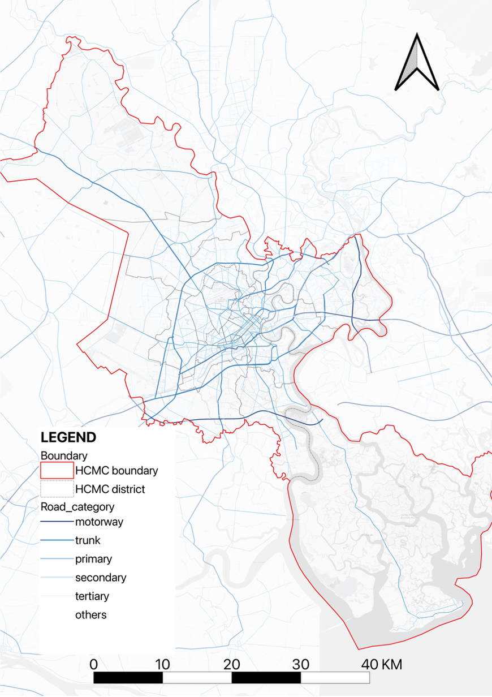
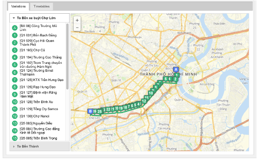

Input 1
Street-view traffic detection
Mapillary images provide timestamped and geolocated observations of motorcycles, cars, and buses. These detections are used to estimate mode-specific street-level traffic presence.

The project translates multi-source urban mobility data into a shared spatial and temporal structure. Rather than treating traffic, congestion, and public transport as separate topics, the framework connects them through a consistent 250m × 250m grid and weekday/weekend time logic, allowing citywide patterns to be compared and interpreted as one mobility system.
The framework begins with three complementary datasets: street-view traffic detection, road network structure, and public transport data. Together, they describe observed traffic presence, infrastructure capacity, and planned transit supply.
Mapillary images provide timestamped and geolocated observations of motorcycles, cars, and buses. These detections are used to estimate mode-specific street-level traffic presence.

OpenStreetMap road categories and network geometry are used to estimate road supply, including road length density and road area density across the urban grid.

Bus routes, stops, schedules, vehicle capacity, and fare information support schedule-based bus simulation, supply measurement, and network-based accessibility analysis.

The key methodological move is to align all indicators under one common unit. This allows the project to compare observed traffic pressure, road supply, public transport provision, and accessibility without switching between incompatible spatial scales.
HCMC’s mobility challenges are not explained by a single map or indicator. The shared grid-time structure makes it possible to identify where motorcycle dominance, congestion pressure, weak road supply, and limited public transport service overlap.
This is the basis for moving from visual pattern recognition to a more systematic diagnosis of mobility mismatches.
The analysis is organized into three linked components. Each component produces a different reading of the same urban mobility system, and each feeds into the final interpretation.
The framework is designed not only to describe mobility conditions, but to support spatial strategy. By linking traffic demand, road supply, accessibility, and transport service, it prepares the ground for targeted interventions and the later Mobility Analyzer module.
Improves public transport reliability, frequency, dispatch, and bus–metro coordination.
Improves pedestrian access, safe crossings, station-area design, and inclusive accessibility.
Responds to motorcycle dependence through shared mobility, micro-mobility hubs, and integrated feeder systems.
Addresses mixed traffic, bottlenecks, motorcycle lane organization, intersections, and real-time control.